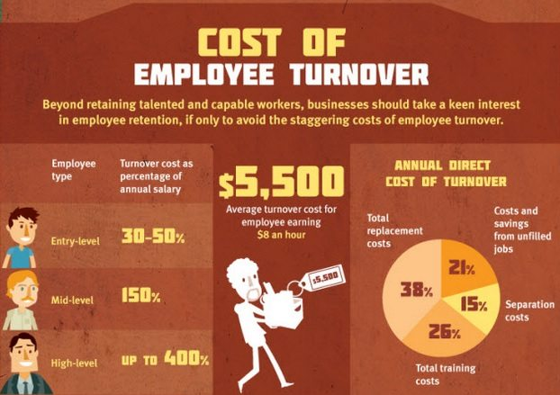

Introduction
Due to similar parenting styles, peer relations, economic conditions, social events, and media influences, each generation amasses a distinct foundation of values and perspectives that tend to endure throughout the course of a lifetime. For example, people born between 1960s and 1970s, otherwise collectively known as Generation X, were raised in a time period defined by economic hardships and increasing divorce rates. They were surrounded by bouts of social insecurity and a loss of tradition. Thus, they were conditioned to be self-reliant. This outcome is in sharp contrast to the “trophy kids” perspective concerning Generation Y. Gen Yers, also known as millennials, were the “center of parental and societal attention” and thus expect everything to be handed to them.
Although individuals are inherently different, this similar collection of world views “is the anchor against which later experiences are interpreted” and, as such, has behavioral consequences for the way different generational age groups approach problems and communicate in work environments (Mirza, 2010). Because Generations X and Y developed different foundations of values, they exhibit different behaviours and communication styles in the workplace, which creates a challenge for managers trying to establish a uniform management style. This report will evaluate the differences in communication among generations X and Y through a lense encompassing a large scope of factors critical to a successful work environment including job satisfaction, professionalism and work cohesion. This report will analyze current management responses to generational differences regarding these three aspects and then draw on these findings to deliver insightful recommendations for management communication going forward.
Hypothesis
Based on different traits displayed by Generations X and Y, as well as immense technological and societal changes that have taken place over the years, we expect to find substantial communication challenges in the modern workplace. We believe that communication differences amongst generations have disrupted past management styles, thus forcing executives to find innovative ways to facilitate communication in this dynamic workforce.
Research Methods
Primary Research
To obtain data from multiple different perspectives, employees and managers were interviewed. Charles Wahab was interviewed due to his millennial and managerial status. Two Apple employees including a technical repair worker and a manager responsible for 500 people were also interviewed. This research proved invaluable, for it allowed a manager-employee comparison within the same company. The remaining interviewees included experienced managers and a body language expert.
Secondary Research
Books, academic journals and news articles were utilized to provide a theoretical foundation to the primary research. These sources came from the KCL library, the British Library and various online catalogues and care was taken to ensure authors were research academics or retired workplace professionals.
Key Findings
Job Satisfaction
Employee job satisfaction is a concern for all organizations interested in attracting and retaining talent. The research conducted highlights three main aspects of job satisfaction that generations X and Y communicate and respond differently to including: training, feedback, and compensation expectations.
Training is a costly practice for firms. Millennials and Generation X value the extent of training differently. According to Giacomo Calvaruso, manager of Enel Points, the millennial age group is looking for managers to help them develop transferable skills, so that they are not bound to one company or industry. They prefer and respond more positively to a management style closely resembling that of a coach and have higher expectations for training than their Generation X counterparts, who are primarily looking for an authoritarian leader to deliver tasks and assignments (Calvaruso 2017, pers. comm., 15 November). It is important for firms to invest in their employees, but they must also keep in mind retention risks. A study conducted in 1999 found Gen Yers were more likely than the older generation to seek out employment opportunities offering “status” and “freedom”, and were prepared to leave an organization if their “needs” were not being met (Mirza, 2010).
According to the Hierarchy of Needs theory, when a manager appraises their employees, it fulfils their “esteem needs”, increasing motivation and efficiency (Callofthewild.co.uk, 2017). Therefore, if an employee receives appropriate feedback, job satisfaction is bound to increase. A case study conducted to uncover the truths behind generational stereotypes revealed that Gen Yers tend to seek out detailed feedback on their performance, information on possible promotions, and advice for future career advancement paths. They care more about their general professional development, whereas Gen X are more focused on company-related news, job stability, and their career growth within that company (Calvaruso 2017, pers. comm., 15 November). These opposing end goals can cause tension where group projects and team delivery is concerned.
This day in age, salaries are no longer considered a taboo topic by younger employees. Bankrate Inc.’s TheCashlorette.com, a personal finance firm, surveyed 1,000 employees and found that roughly half of millennials felt comfortable discussing compensation with their peers, whereas only 36% of Americans overall shared this perspective (Gee, 2017). There is also a variety of online resources that allow users to share and compare salaries, including sites such as Glassdoor. This knowledge gives more powerful footing to employee negotiations regarding starting salaries and pay raises, which then puts pressure on management to establish formalized and equal promotion and compensation processes (Gee, 2017). In order to help resolve these issues, some companies, such as Apple, implement strict policies that prevent employees from discussing salaries and benefits. Not only does this help eliminate conflicts between employees and management, but it also helps relieve tension regarding compensation among individual employees and generational age groups (J Allen 2017, pers. comm., 20 November).
Professionalism
Professionalism is a crucial component for managing a firm’s public image and meeting stakeholder expectations. Body language, tone, and personal presentation are all ways in which professionalism is communicated and each vastly affects how messages are received.
As the new generation integrates into the workplace, it becomes apparent that the meaning of “acceptable” body language has changed. According to Nabaa Al-Alawi, a millennial Customer Systems employee at Asda, the younger generation tends to give more importance to spoken communication as opposed to body language (N Al-Alawi 2017, pers. comm., 28 November). This is dangerous, as older managers can interpret the lack of attention paid to physical expression as a sign of disrespect. Laszlo Daniel Szabo, an Neuro-Linguistic Programming expert from Romania, teaches nonverbal communication to employees. Managers hire Szabo in hopes of bridging the body language communication gap between their younger and older employees. In his seminars, he teaches how to show someone they have your attention, how to dress appropriately, and how to use hand-gestures in a way that enhances rather than detracts from your message. The demand for Szabo’s services not only shows how important body language is in workplace communication, but it also demonstrates the fact that companies are becoming increasingly aware of cross-generation communication issues and are seeking ways to resolve them.
Similarly, personal presentation is the basis for any first impression, and instantly creates personal biases. In the past, tattoos, unnatural hair colours, and piercings were all considered extremely unprofessional and did not warrant respect. However, as time has progressed, society has become more open-minded about such aspects. A study by the Pew Research Center showed that “about 54% [of millennials] have done one or more of the following: gotten a tattoo, dyed their hair an untraditional color, or had a body piercing in a place other than their ear lobe” (Heimlich, 2008). However, there is still variation between industries. In industries that are dominated by older generations, millennials automatically tend to avoid personal presentation beyond the norm, whereas in up-and-coming industries dominated by younger generations, there is an inherent assumption amongst millennials that such expression is acceptable. Research has shown that around one in ten European companies have adopted a more casual dress code and many employers have found dress code to be correlated with employees’ attitudes. Sean Mallon, CEO of Bizdaq, states that “clothes you wear definitely affect creativity and productivity” but warns that “it can go both ways” (Gough, 2017). Still, it is apparent that to please and attract the millennial workforce, an increasing number of companies are adopting a more casual attitude towards self-expression through dress code, tattoos, and piercings.
Work Cohesion
Companies must facilitate a cohesive work environment so that tasks are completed and business operations run smoothly. In order to achieve this cohesiveness, managers must facilitate productive meetings, address work/life balance complications, and communicate effectively with staff through a variety of mediums.
Bruce Tulgan, the author of “How to Manage Generation X”, believes that “Gen Y is Gen X on fast-forward, with self-esteem” (Tulgan, 2013). In his study, Tulgan acknowledges that the two generations have similar character traits, such as ambition to succeed and priority to maintain balance among work and life obligations, yet Gen Yers tend to exhibit more altruism, teamwork, and fairness (Tulgan, 2013). Another point to note is that Gen X supposedly grew up as “latchkey kids”, meaning they were often unsupervised (Tyler, 2017). Meanwhile, as mentioned earlier, Gen Y has been over-supervised (Tyler, 2017). These inherent differences have an impact on employees’ expectations of management styles. Giacomo Calvaruso, the manager of Enel Points, noticed that Gen X tends to highlight issues during meetings because this allows them to feel like “experts”. Gen Y, on the other hand, tends to be more solution-oriented and have no need for that expert status (Calvaruso 2017, pers. comm., 15 November). Furthermore, millennials are more likely to express their opinions regarding the company because they believe they are “worth sharing” (Calvaruso 2017, pers. comm., 15 November). When asked an anonymous Apple millennial employee if there was conflict regarding the age gap, he confidently replied, “I have never felt like ‘oh you’re too young to know something like that’. I have just as much ability and upward mobility as someone older than me in the company” (Apple Employee 2017, pers. comm., 20 November). Justine James, Founder and CEO of Talent Smoothie, mentioned that Gen Yers do not mind sharing what is on their mind and “ruffling feathers”, which might cause tension between them and the Gen Xers. This behavior was exemplified when a recent graduate hire confronted the CEO on an issue, which baffled older employees who were well-aware of the corporate hierarchy and their “place” (Managing a 5 generation workforce, 2016).
Additionally, Calvaruso has experienced that millennials are less engaged in cultural, religious, and familial duties, requiring less work/life balance. Resham Mirzo states that millennials will work long hours when they kickstart their career because they believe that an excessive workload is essential to professional success. However, this workaholic-mentality is temporary and, over time, leisure becomes more highly-valued among Gen Y than Gen X as they expect to reduce these hours to start a family (Mirzo, 2010).
Following the “amped-up” attitude of millennial employees and the recent rapid growth in communication technologies, it is only expected that Gen Yers would resort to instant ways of communication to complement their lifestyles. For the longest time, if one needed to communicate with colleagues or professional superiors, email was the only appropriate method to do so. However, with the development of technology being as dynamic as it is, it is only logical to assume that communication in the workplace is no longer confined to just email. For example, millennials in small work environments, where teams are more personal, believe that online communication platforms such as WhatsApp are appropriate, but draw a line at social media. In many larger corporations, however, teams have been adopting virtual collaborative environments such as Slack, Airtable, MeisterTask, etc. Not only does this allow to instantly share large loads of data, but also satisfies the millennials’ work-on-the-go attitude. The CEO of Virgin Media called emails “stupid busy” because “it is a very linear form of communication” and does not “prioritize information”. Instead, his company is now moving towards “unified communication” platforms that allow for real-time collaboration (Goodwin, 2014). This is just one of multiple examples of companies adopting virtual and instant means of workplace communication.
However, some managers, such as James Allan, maintain an opposing view. He believes that face-to-face communication is superior as it is most authentic (J Allen 2017, pers. comm., 20 November). Calvaruso believes that the communication mediums in order from most to least important are as follows: email, phone, skype, physical meetings (Calvaruso 2017, pers. comm., 15 November). These opinions are heavily contrasted by the attitudes most modern technology companies are taking on, which speaks to the existing generation clash in workplace communication. In the end, though, it is clear that as the millennial workforce increases, companies continue moving towards more progressive and instant ways of communication.
Conclusion
The primary and secondary research findings confirm that substantial communication challenges exist in the modern workplace due to key generational differences. As such, there are many new ways in which management must handle communication going forward.
Where job satisfaction is concerned, management must balance training costs with labor turnover. Evidence highlights the younger generation’s tendency to leave a firm if their expectations are not met. Also, concerning the correlation between feedback and job satisfaction, managers must deliver feedback that serves to meet employees’ “esteem needs”. In response to millennials’ transparency regarding personal salaries, management is forced to communicate and formalize compensation packages, which potentially hurts firm profitability.
Additionally, millennials have shifted the definition of professionalism in the work environment which has caused tension among the Gen Xers. Managers must teach their younger employees how to communicate nonverbally by addressing factors such as attention, appropriate hand gestures, and suitable dress attire and presentation.
Lastly, managers should be aware of millennials’ disposition towards freely expressing their thoughts, having a work-on-the-go attitude, and preferring instant ways of communication. To satisfy these needs, managers have been paying more attention to Gen Y’s input, allowing for work from home, and adopting unified communication platforms for instant real-time collaboration.
Considering these research discoveries, there are several communication strategies managers should employ going forward.
Recommendations
Job Satisfaction
Managers should communicate the job expectations, training procedures, and the overall work environment to prospective employees during the recruitment process. This will prevent potential issues and dissatisfaction as well as decrease employee turnover which is financially beneficial to the company.
Managers should hold frequent one-on-one feedback sessions and tailor communication according to age and other personal characteristics. Inform Gen Xers on where the company is headed and how they fit into the big picture, while communicating to Gen Yers they as an individual is headed within the company.
Professionalism
While millennials should be aware of how their “relaxed” attitudes may come off as unprofessional and disrespectful towards their superiors, workplace standards are changing and so must the employers’ attitudes. Managers should implement non-verbal etiquette training for both generations to ease tension, prevent miscommunication, and promote professionalism in the office.
Managers should also consider adopting a more relaxed dress code policy. Many companies in the tech industry are following this trend and related findings show that such regime sparks creativity, collaboration, and productivity. Not only will this benefit the company, but also millennials who will feel more comfortable in this environment.
Work Cohesion
Managers should play to the strengths of each generation by encouraging intergenerational partnerships and mentoring programs. They must also encourage both Gen X and Gen Y to share their opinions during meeting, so as to prevent Gen X from resenting the take-charge Gen Y behavior. In addition, managers need to assert their authority to the younger employees who tend to be less subordinate and may challenge the hierarchical structures.
Furthermore, millennials struggle with over-eagerness and burn out. As such, managers need to clearly communicate the time commitment required for work projects. Factors such as the physical layout of the office are also important as Gen Y tend to be more comfortable working under supervision. Finally, managers should align flexibility options including working from home and temporary leave with the work tasks at hand. This means taking into consideration the amount of staff needed and the importance of virtual and face-to-face communication. In-person communication should never be completely eliminated due to factors such as non-verbal communication being so important.
General Note
Managers must understand stereotypical consequences. For example, the over-dependent complex related to millennials is not embraced by all professionals. Charles Wahab, Vice President of data architecture at Deutsche Bank, claimed not to notice “any difference in neediness among his employees” (C Wahab 2017, pers. comm., 23 October). If he were to communicate with his younger employees under that stereotypical context, it might bolster a self-fulfilling prophecy or cause resentment.
References
Al-Alawi, N & Ahdra, 2017. Interview with Nabaa Al-Alawi, ASDA employee.
Allan, J. & Phillips , K.M., 2017. Interview with James Allan, Manager at Apple.
Anon, 2016. Managing a five generation workforce. Croner-i. Available at: https://app.croneri.co.uk/feature-articles/managing-five-generation-workforce?product=6 [Accessed December 10, 2017].
Apple Employee & Phillips , K.M., 2017. Interview with Apple Employee.
Callofthewild.co.uk. (2017). Maslow's Hierarchy of Needs - How to Motivate Your Staff. [online] Available at: http://www.callofthewild.co.uk/library/theory/maslows-hierarchy-of-needs-how-to-motivate-your-staff/ [Accessed 7 Dec. 2017].
Calvaruso , G. & Toc, M., 2017. Interview with Giacomo Calvaruso, Manager of Enel Points Sicily .
Ed, L. (2001). NEW KIDS on the block. Modern Healthcare, 31(5), p.28
Eversole, B., Venneberg, D. and Crowder, C. (2012). Creating a Flexible Organizational Culture to Attract and Retain Talented Workers Across Generations. Advances in Developing Human Resources, 14(4), pp.607-625.
Gee, K. (2017). Ask Me How Much Money I Make: Pay Gets More Transparent. [online] WSJ. Available at: https://www.wsj.com/articles/ask-me-how-much-money-i-make-pay-gets-more-transparent-1508929200 [Accessed 15 Nov. 2017].
Goodwin, B., 2014. No more email? Why companies are turning to collaboration technology. ComputerWeekly.com. Available at: http://www.computerweekly.com/feature/No-more-email-Why-companies-are-turning-to-collaboration-technology [Accessed December 10, 2017].
Gough, O., 2017. One in ten European company dress codes have gone casual. Small Business. Available at: http://smallbusiness.co.uk/company-dress-codes-casual-2537735/ [Accessed December 10, 2017].
Grubb, V. (2016). Clash of the generations : managing the new workplace reality. Hoboken, New Jersey: John Wiley & Sons, Inc.
Hansen, J. and Leuty, M. (2012). Work Values Across Generations. Journal of Career Assessment, 20(1), pp.34-52.
Heimlich, R., 2008. Tattooed Gen Nexters. Pew Research Center. Available at: http://www.pewresearch.org/fact-tank/2008/12/09/tattooed-gen-nexters/ [Accessed December 10, 2017].
Johnson, M. and Johnson, L. (2010). Generations, Inc.. New York: AMACOM American Management Association, pp.59-153.
Lammers, J. (2011). How Institutions Communicate: Institutional Messages, Institutional Logics, and Organizational Communication. Management Communication Quarterly, 25(1), pp.154-182.
McLeod, S. (2017). Maslow's Hierarchy of Needs. [image] Available at: https://www.simplypsychology.org/maslow.html [Accessed 26 Nov. 2017].
Merali , S. & Ahdra, 2017. Interview with Shakir Merali.
Mirza, R. (2010). Generational Differences in the Workplace: Attitudes and Experiences of Work-Life Balance. King’s College London.
Morgan, N. (2017). Does body language really matter? - Public Words. [online] Public Words. Available at: http://www.publicwords.com/2011/06/26/does-body-language-really-matter/ [Accessed 27 Nov. 2017].
Perugia, S. (2017). Body language at work: how to connect, inspire and project confidence. [online] the Guardian. Available at: https://www.theguardian.com/women-in-leadership/2015/dec/10/body-language-work-project-confidence [Accessed 26 Nov. 2017].
Rentz, K. (2015). Beyond the Generational Stereotypes: A Study of U.S. Generation Y Employees in Context. Business and Professional Communication Quarterly, 78(2), pp.136-166.
Szabo, L.D. & Toc, M., 2017. Interview with Laszlo Daniel Szabo, NLP Master and ex-manager.
Tulgan, B. (2013). Not everyone gets a trophy. San Francisco, Calif.: Jossey-Bass.
Tyler, K., 2017. Organizational & Employee Development: New Kids on the Block. SHRM. Available at: https://www.shrm.org/hr-today/news/hr-magazine/pages/1013-managing-millennials.aspx [Accessed December 10, 2017].
Szabo, L.D. & Toc, M., 2017. Interview with Laszlo Daniel Szabo, NLP Master and ex-manager.
Wahab , C. & Phillips, K.M., 2017. Interview with Charles Wahab, FinTech Professional.
YouGov: What the world thinks. (2017). YouGov | 18-24 year olds: generation aspiration?. [online] Available at: https://yougov.co.uk/news/2014/06/12/aspirational-generation/ [Accessed 28 Nov. 2017].
Images
Anon, (2017). [image] Available at: https://www.payscale.com/gen-y-at-work [Accessed 10 Dec. 2017].
Anon, (2017). [image] Available at: http://articulatepersuasion.com/wp-content/uploads/2015/07/Same-language-300x284.jpg [Accessed 10 Dec. 2017].
Anon, (2017). [image] Available at: https://www.teambonding.com/wp-content/uploads/2015/03/employee-turnover-cost-caculations.jpg [Accessed 10 Dec. 2017].
Anon, (2017). [image] Available at: http://www.planningcapital.com/wp-content/uploads/2015/08/Family-Financial-Meeting.jpg [Accessed 10 Dec. 2017].
Anon, (2017). [image] Available at: http://artoftall.com/wp-content/uploads/2017/04/body_language.jpg [Accessed 10 Dec. 2017].
Anon, (2017). [image] Available at: https://www.oneupweb.com/wp-content/uploads/2015/08/tone-2.png [Accessed 10 Dec. 2017].
Anon, (2017). [image] Available at: http://humanergy.com/wp-content/uploads/2014/00/team-contribution.jpg [Accessed 10 Dec. 2017].
Anon, (2017). [image] Available at: https://blog.hubspot.com/hubfs/00-Blog-Related_Images/work-life-balance-hubspot-blog.png?t=1512720449468 [Accessed 10 Dec. 2017].
Anon, (2017). [image] Available at: https://www.digitaltrends.com/wp-content/uploads/2012/01/social-media-juggling.jpg [Accessed 10 Dec. 2017].
Anon, (2017). [image] Available at: http://www.publicdomainpictures.net/pictures/10000/velka/1210-12409560184r2o.jpg [Accessed 10 Dec. 2017].
Anon, (2017). [image] Available at: http://xyresearch.com [Accessed 30 Nov. 2017].
Ethos3 (2017). The Importance of Nonverbal Communication. [image] Available at: https://www.slideshare.net/ethos3/the-importance-of-nonverbal [Accessed 28 Nov. 2017].